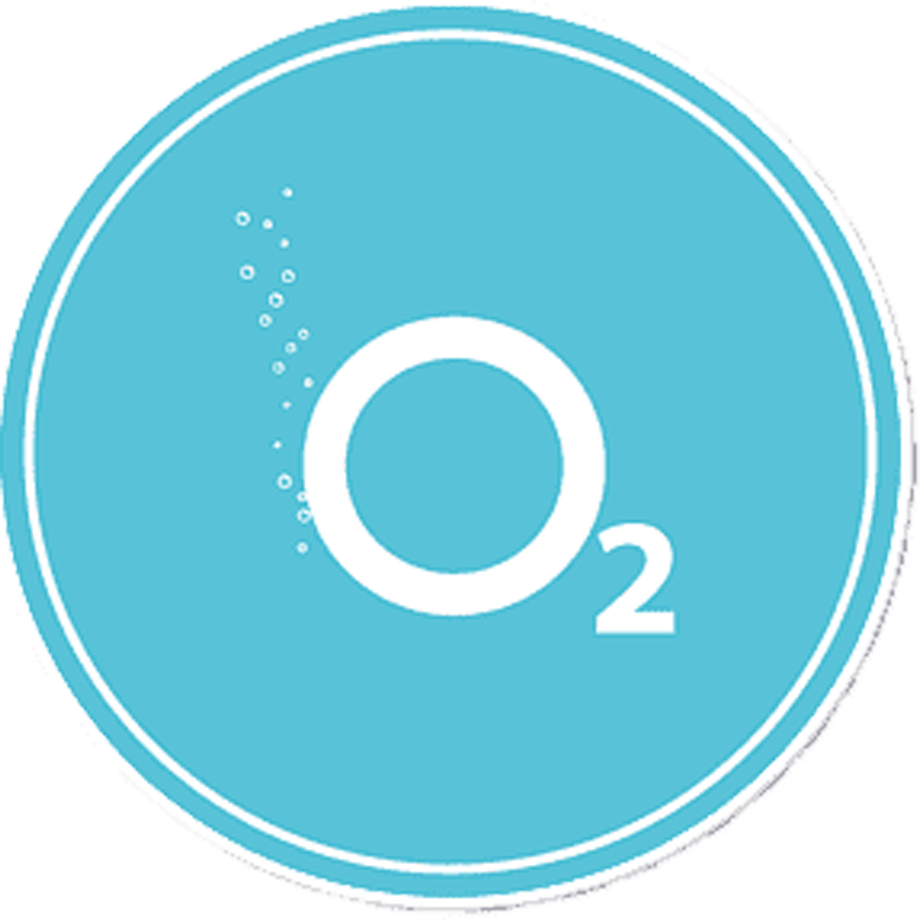

Point dynamics
This project was made in the autumn of 2019 during the study of theoretical mechanics. The goal was to create a program that allows one to simulate the movement of a material point as well as a 3D body in space. At the same time, this was my first C++ program ever that I wrote without YouTube or university teacher's guidance. Although not all the objectives were achieved, this project is considered to be a success.
Server
The server for this web site.
Plane model
This model was made in march 2022. The aerodynamic model is partialy taken from Tu 154 and partialy is just made up. The autopilot uses complex logic to select different control laws depending on the situation, yet their coefficients are are constant under any conditions.

Oxygen project
Oxygen virtual machine
This project was created in the autumn of 2021, inspired by the video of Winderton about projects that every computer science student should try. The architecture of this virtual machine was created using LC3 architecture as a reference but is far from identical. There is also an assembly compiler, written (by me) for this machine.
Oxygen compiler
This is a compiler for Oxygen virtual machine. It features macroses, C-style definitions and includes as well as some built in functions. In outputs ".obj" file for the VM.
Oxygen editor
This is the editor for Oxygen virtual machine, made with C# and WPF. It makes writing assembly code simplier by syntax highlighter. In order to compile your code, "python.exe" must be added to your PATH.